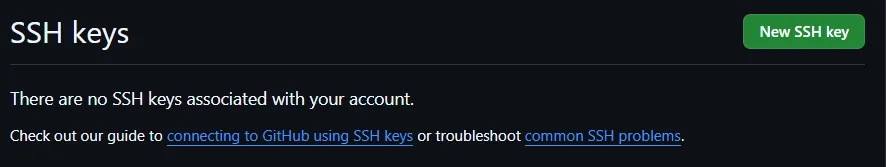

O que é SSH? SSH (Secure Shell) é um protocolo que permite conectar e interagir com servidores de forma segura, criando um canal criptografado para executar comandos e transferir dados.
Como funciona o SSH? O SSH utiliza um par de chaves criptográficas: uma chave privada (guardada no seu computador) e uma chave pública (compartilhada com o servidor). Quando você tenta se conectar, o servidor usa a chave pública para validar sua identidade.
Uso de SSH com o GitHub Utilizar SSH no GitHub torna o processo mais seguro e evita digitar usuário e senha a cada operação. Após configurar as chaves, sua máquina se autentica automaticamente.
No Windows, abra o Git Bash e execute:
ls -al ~/.sshSe não houver chaves, gere uma nova com:
ssh-keygen -t rsa -b 4096 -C "seu_email@example.com"Siga as instruções do terminal para salvar a chave e definir uma senha (opcional).
Inicie o ssh-agent:
eval "$(ssh-agent -s)"Adicione sua chave:
ssh-add ~/.ssh/id_rsaResumo do processo:
ssh-keygen -t ed25519 -C "your_email@example.com"Generating public/private ed25519 key pair.Enter file in which to save the key: [Press enter]Enter passphrase: [Type a passphrase]Copie sua chave pública:
clip < ~/.ssh/id_rsa.pub
No GitHub, vá em Settings → SSH and GPG Keys, clique em New SSH Key, dê um nome e cole a chave pública.
Execute:
ssh -T git@github.comThe authenticity of host 'github.com (IP ADDRESS)' can't be established.
Are you sure you want to continue connecting (yes/no)?
Digite yes. Você verá:
Hi <your_GitHub_username>! You've successfully authenticated, but GitHub does not provide shell access.
Se essa mensagem aparecer, sua autenticação SSH está funcionando corretamente.
Agora você pode clonar repositórios usando SSH:
git clone git@github.com:username/repository.gitCom SSH, você não precisa digitar usuário e senha para operações como push e pull.
Se você tiver várias contas ou máquinas, gere um par de chaves para cada combinação.
Com SSH configurado, seu fluxo de trabalho com Git e GitHub se torna mais seguro e eficiente.